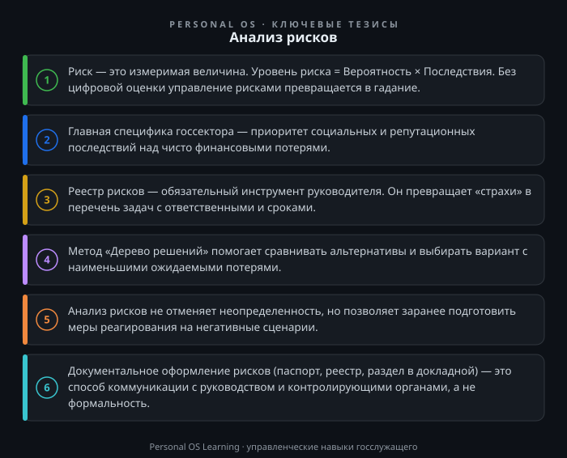

Каждый день руководитель в системе государственного управления принимает решения — от распределения бюджета до выбора подрядчика, от корректировки административного регламента до запуска нового цифрового сервиса. Интуиция и прошлый опыт — плохие помощники, когда цена ошибки измеряется не деньгами компании, а сроками реализации национальных проектов, качеством жизни граждан и репутацией органа власти.
В коммерческом секторе риск — это возможность потерять прибыль. В государственном секторе риск — это вероятность недостижения целей государственной политики, нецелевого расходования средств, нарушения прав граждан или срыва социально значимых программ. Именно поэтому анализ рисков — это не «модная методология», а базовый элемент профессиональной компетенции «Принятие управленческих решений».
Цель этой статьи — разобрать, как встроить анализ рисков в повседневную практику госслужащего: от выявления угроз до выбора решения с учетом их вероятности и последствий. Мы рассмотрим конкретные инструменты, которые работают в условиях жестких сроков, ограниченных ресурсов и высокой бюрократизации.
В классическом менеджменте риск — это сочетание вероятности события и его последствий. Однако для госсектора это определение требует уточнения. Здесь мы говорим о рисках недостижения общественно значимых результатов, а не только о финансовых потерях.
Рассмотрим пример: при разработке государственной программы по переселению из аварийного жилья риском будет не только удорожание стройматериалов (финансовый риск), но и срыв сроков переселения из-за долгих судебных разбирательств с жильцами (репутационный и социальный риск), а также ошибки в кадастровом учете новых квартир (операционный риск).
Специфика рисков в госсекторе:
Главный сдвиг, который должен произойти в сознании госслужащего, — переход от констатации факта («так получилось») к управлению будущим («что мы сделаем, чтобы этого не случилось»).
Универсальная логика анализа рисков укладывается в пять шагов. Она применима и для стратегической сессии, и для оперативного совещания.
Шаг 1. Идентификация (составление перечня).
Соберите команду или проанализируйте ситуацию самостоятельно. Ответьте на вопрос: «Что может помешать нам достичь цели?». Используйте метод «мозгового штурма» или анализ документации (прошлые предписания контролирующих органов, жалобы граждан, отчеты о прошлых проектах). Важно зафиксировать все идеи, даже на первый взгляд маловероятные.
Шаг 2. Описание и классификация.
Каждый риск нужно описать по формуле: «Причина → Событие → Последствие». Например: «Из-за задержки утверждения сметы (причина) не будет объявлен конкурс на закупку (событие), что приведет к срыву сроков ремонта дороги (последствие)». Классифицируйте риски по источникам: политические, экономические, социальные, технологические, операционные, правовые.
Шаг 3. Оценка (вероятность × последствия).
Создайте шкалу от 1 до 5 для вероятности и от 1 до 5 для серьезности последствий. Произведение этих значений даст приоритет риска. Например, риск «сбой в работе СЭД» может иметь вероятность 3 (средняя) и последствия 2 (незначительные — задержка согласования на день). Итоговый балл — 6 (низкий приоритет). А вот риск «нецелевое использование субсидии» может иметь вероятность 2, но последствия 5 (уголовная ответственность, возврат средств в бюджет). Итог — 10 (критический приоритет).
Шаг 4. Разработка мер реагирования.
Для каждого значимого риска (с баллом выше среднего) определяем стратегию:
Шаг 5. Мониторинг и пересмотр.
Риск-паспорт — это не документ «для галочки». Он должен пересматриваться не реже одного раза в квартал или при существенном изменении внешней среды (изменение законодательства, макроэкономической ситуации).
На практике в органах власти прижились два базовых инструмента. Их использование не требует сложного ПО — достаточно Excel или даже бумаги.
Реестр рисков (журнал).
Таблица, где каждая строка — это конкретный риск. Обязательные колонки: №, наименование риска, причина, последствие, вероятность (1-5), последствия (1-5), уровень риска (В*П), владелец риска (ответственный сотрудник), план мероприятий, срок, статус.
Матрица рисков (тепловая карта).
Визуальное представление реестра. Ось X — последствия (от 1 до 5), ось Y — вероятность (от 1 до 5). Поле матрицы делится на три зоны: зеленую (приемлемый риск), желтую (требует внимания), красную (требует немедленных действий). Это удобно для доклада руководству: на одном листе видно, где сосредоточены главные угрозы.
Пример из практики. Предположим, ваш отдел готовит проект постановления о новых мерах социальной поддержки. Риск «неверный расчет количества получателей» попадает в красную зону (вероятность 4, последствия 5 — нехватка бюджетных средств). Мера реагирования — запросить данные в нескольких ведомствах (ПФР, ФНС, органы ЗАГС) и создать межведомственную рабочую группу для верификации цифр. Это снижает вероятность ошибки до 2, а последствия — до 3 (за счет заложенного резерва средств).
Анализ рисков — это не самоцель, а база для выбора. Классический инструмент — дерево решений. Он позволяет сравнить альтернативы, когда есть несколько вариантов действий и несколько возможных исходов.
Кейс. Руководитель решает, как провести капитальный ремонт здания администрации.
Просчитав «стоимость» каждого исхода (время, деньги, репутация), руководитель может принять взвешенное решение, а не действовать наугад. Важно понимать: анализ рисков не гарантирует «правильный» ответ, но он структурирует мышление и позволяет заранее подготовить «план Б».
Госслужащий часто сталкивается с ситуацией, когда точной статистики нет, а решение нужно принимать сегодня. В таких случаях применяются экспертные методы.
Здесь важно помнить о когнитивных искажениях. Самые частые ошибки руководителя — оптимизм («у нас-то точно все получится») и якорение (привязка к первому услышанному мнению). Чтобы снизить их влияние, стоит назначать сотрудника на роль «адвоката дьявола», который обязан оспаривать каждое позитивное предположение.
В госсекторе любой анализ должен быть оформлен. В зависимости от масштаба задачи это может быть:
При оформлении избегайте общих фраз типа «неблагоприятная экономическая ситуация». Пишите конкретно: «Рост стоимости стройматериалов более чем на 15% в течение полугода, приводящий к необходимости корректировки проектно-сметной документации». Такая формулировка позволяет назначить ответственного и разработать измеримый план действий.
Для закрепления материала выполните следующие упражнения. Каждое из них займет 15–30 минут, но даст немедленный эффект для вашей текущей работы.
Задание 1. Разбор плана отдела.
Возьмите план работы вашего отдела на следующий квартал. Выберите 3 ключевые задачи. Для каждой задачи письменно ответьте на три вопроса:
Задание 2. Составьте реестр рисков для текущего проекта.
Если вы участвуете в подготовке нормативного акта, закупки или реализации проекта, составьте мини-реестр рисков на 5-10 позиций по шаблону из раздела 3. Для каждого риска укажите владельца (конкретного сотрудника) и одно простое мероприятие по снижению. Вы удивитесь, насколько проще станет обсуждать проект на совещании, когда у вас на руках будет этот документ.
Задание 3. Проверка на «провал».
Возьмите недавно принятое вами или вашим руководителем решение. Проведите «тест на провал»: представьте, что через год решение признано неудачным. Составьте список из 3-5 причин, по которым это могло произойти. Какие из этих причин вы могли бы устранить еще на этапе подготовки? Этот метод помогает выявить скрытые риски, которые обычно упускаются из-за эйфории от «красивого» решения.
Анализ рисков в государственном управлении — это не бюрократическая процедура, а инструмент профессиональной зрелости. Руководитель, который умеет видеть риски, просчитывать их и управлять ими, принимает более устойчивые решения. Он защищает не только себя от дисциплинарной ответственности, но и граждан — от некачественных госуслуг, а государство — от нецелевого расходования средств. Начните с малого: составьте реестр рисков для одной своей задачи, и вы почувствуете, как хаос угроз превращается в упорядоченный список задач, которые можно решать.

Открыть инфографику в полном размере ↗